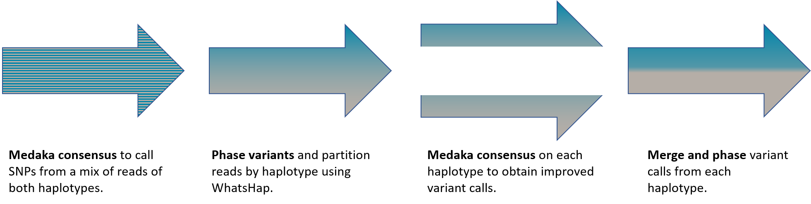

Experimental Variant calling¶
Medaka implements an experimental pipeline to call single nucleotide polymorphisms (SNPs), insertions, and deletions (Indels) from Nanopore basecalls, leveraging medaka’s existing consensus network and phasing information from WhatsHap.
By way of background, below we discuss the evolution of variant calling
in medaka from a first SNP-only implementation based simply on the standard
medaka consensus command, to a second implementation leveraging phasing
of variants to call haplotype consensuses, arriving at a final draft
implementation which also calls Indel variants.
v0.6.x SNP only calling¶
February 2019
The initial approach was to make a first pass on a pileup of reads to a reference
sequence using medaka in the usual manner. Ordinarily medaka will only call a
consensus sequence from the outputs of its neural network. However is it
possible to pull-out secondary calls from its output, i.e. alternative
alleles. A secondary call occuring with a high probability indicates
heterozygous locus. Where no secondary call occurs with a high probability the
locus is determined to be homozygous.
Applying such a process gives respectable, if not state-of-the-art results for
a region (chr21:21300000-22305000) of the NA12878 human sample.
| Precision | Recall | F1 score | |
| nanopolish | 0.9938 | 0.9662 | 0.9798 |
| clairvoyant | 0.9906 | 0.9519 | 0.9709 |
| medaka consensus | 0.9575 | 0.9467 | 0.9521 |
Here both the nanopolish and clairvoyant calls have been post-processed with a custom strand-bias filter to maximise the F1 score. Remarkably despite being trained to call a single consensus, medaka can in fact recover some heterozygous sites. Indeed one of its failings is to call homozygous sites as heterozygous; this is often true of nanopolish also.
To improve on these results, we can attempt to phase the recovered variants using WhatsHap. This process allows us to uncover the haploid genomes and assign a haplotype to all reads. Having partitioned reads into their haplotype we can run medaka consensus a second time to calculate a consensus sequence for each haplotype invididually. This second pass is a task in which we know medaka excels, see Benchmarks. Having run medaka on the partitioned reads it is a simple task to reconstruct variant calls, both homo- and heterozygous, and rephase.
In principle one can iterate this process to further refine the partitioning of reads into their haplotypes. After two iterations we obtain state-of-the-art results for the region under test:
| Precision | Recall | F1 score | |
| medaka variant | 0.9939 | 0.9745 | 0.9841 |
| nanopolish | 0.9938 | 0.9662 | 0.9798 |
| clairvoyant | 0.9906 | 0.9519 | 0.9709 |
| medaka consensus | 0.9575 | 0.9467 | 0.9521 |
v0.7.0 SNP and Indel calling¶
May 2019
Single nucleotide polymorphisms account for 85% of small variants in the human genome,
leaving a good proportion of insertion and deletion variants. It is therefore
desirable to detect also these latter classes of variation. medaka v0.7.0
introduces the ability to call a full set of small variants.
The procedure is much as for the previous SNP only implementation: a first pass is made in which only SNPs are called is used to partition reads by haplotype after which indels are called also.
Benchmarking is performed here on the whole of chromosome 21 of the NA12878 sample, according
to the GA4GH best practices
using hap.py with the
GIAB truth set statified to exclude
repeat regions as defined by the
GA4GH process.
Variants were filtered by their QUAL values (separately for SNP and Indel)
to maximise the F1 score.
| Class | Precision | Recall | F1 score | |
| medaka variant | SNP | 0.9870 | 0.9812 | 0.984 |
| Indel | 0.8637 | 0.8433 | 0.853 | |
| clair | SNP | 0.9918 | 0.9909 | 0.991 |
| Indel | 0.7210 | 0.5906 | 0.649 |
Shown also are results from clair an improved version of clairvoyant.
clair is slightly better than medaka at calling SNPs but somewhat worse
at Indel calling.
Performing Variant Calling¶
Note
The medaka_variant (and medaka_consensus) pipeline only operate on
a .bam alignment file containing a single sample (value of the RG
alignment tag). It will refuse to run in the case of two read groups
being present.
The pipeline described above is implemented in the medaka_variant program:
source ${MEDAKA}
medaka_variant -f <REFERENCE.fasta> -b <reads.bam> -m r941_flip213
It has been benchmarked on flip-flop basecaller output only. This will run all
the necessary steps, performing two iterations of the process described above
finally outputting a final phased .vcf variant file.
Warning
Variants output by medaka_variant are unfiltered, but are provided with
qualities. It is left to the user to decide how to filter variants for their
datasets and applications.
Further Improvements¶
Currently the medaka_variant pipeline reuses existing tools and neural neural
networks trained for the task of deriving a consensus sequence. No
specialisations have been made for the task at hand. Naturally the existing
networks do not expect reads indicating a diploid sample and so their ability
to correctly call heterozygous sites is limited, though useful as demonstrated
above. It would be preferable to train a neural network with explicit knowledge
of zygosity — this can be done fairly straight-forwardly with some minor
modifications to medaka’s training code.
The models currently provided within medaka are trained from bacterial
samples, and further predominantly from PCR products. To improve variant
calling from basecalls of human, native DNA a next step would be to instead use
such a sample in training.
With these changes, and others, it is likely that the results presented above can be improved upon.